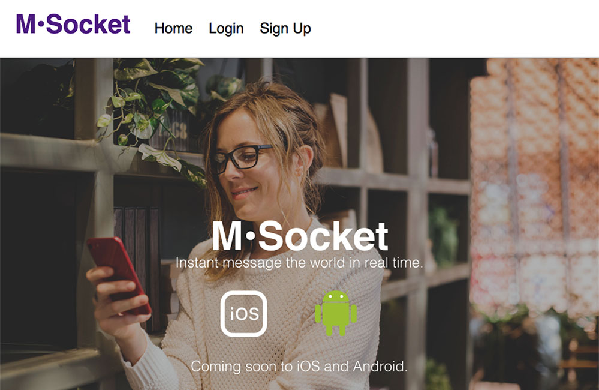

My Work

"Please scroll down"
This is an application uses Web Socket (Socket.io) technology to create a person to person(s) instant messenger web app. The frontend is powered by React, Redux, Socket.io client. The server is a NodeJS Express server, using MongoDB and Passport for creating an account. M•Socket GitHub
This is an application uses Web Socket (Socket.io) technology to create a person to person(s) instant messenger web app. The frontend is powered by React, Redux, Socket.io client. The server is a NodeJS Express server, using MongoDB and Passport for creating an account. M•Socket GitHub
 "Please scroll down"
"Please scroll down" I wanted to create an application that mimic post it notes. I love using post it notes in my work to orient myself on a project but I always find that they are easily lost and usually in one place. Making this application solved having my notes saved to the cloud so I can have access to our post it notes. Sticky Note GitHub